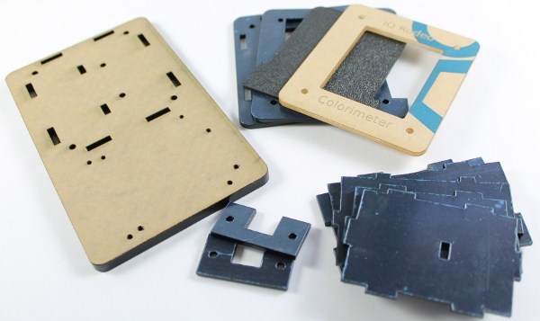
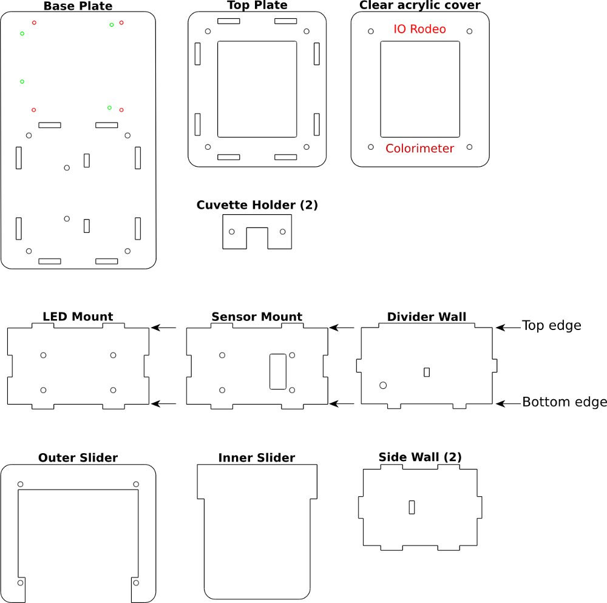

Enclosure Parts (laser-cut acrylic)¶

Below is a guide for the 12 acrylic parts that make the colorimeter enclosure. Note that for the base plate, colored holes indicate the two different mounting patterns. Green = Arduino mounting holes; Red = TuxCase mounting holes.
